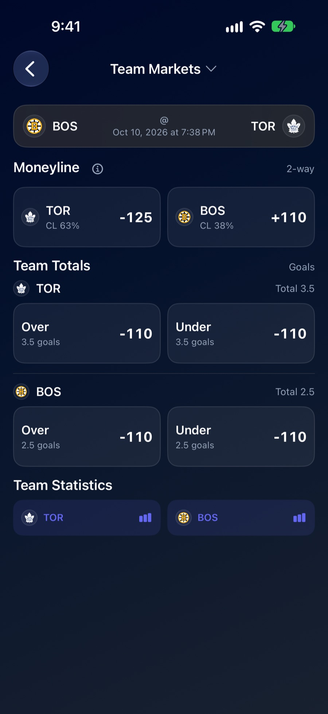
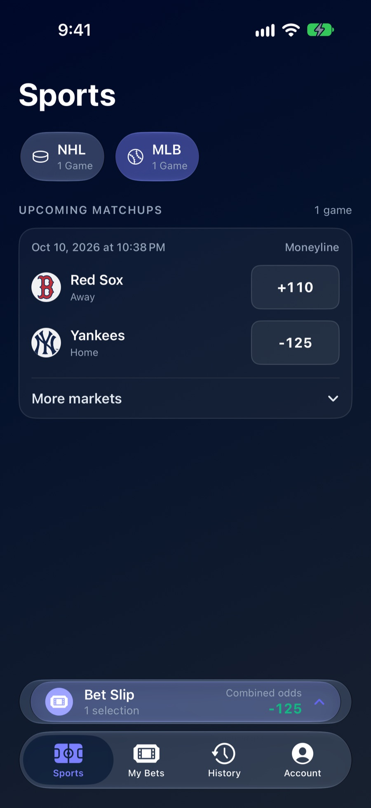
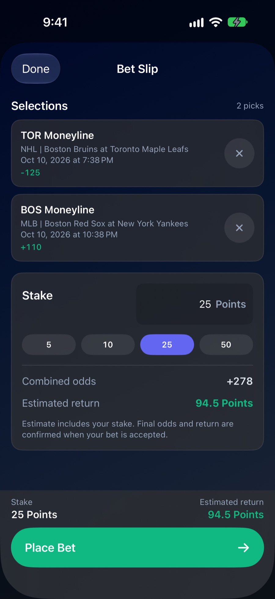
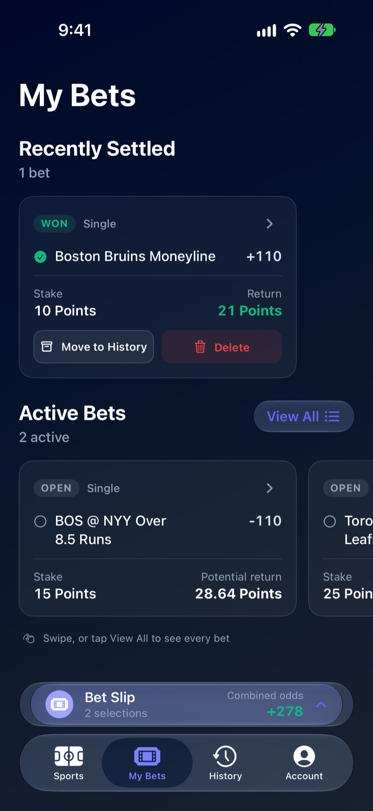
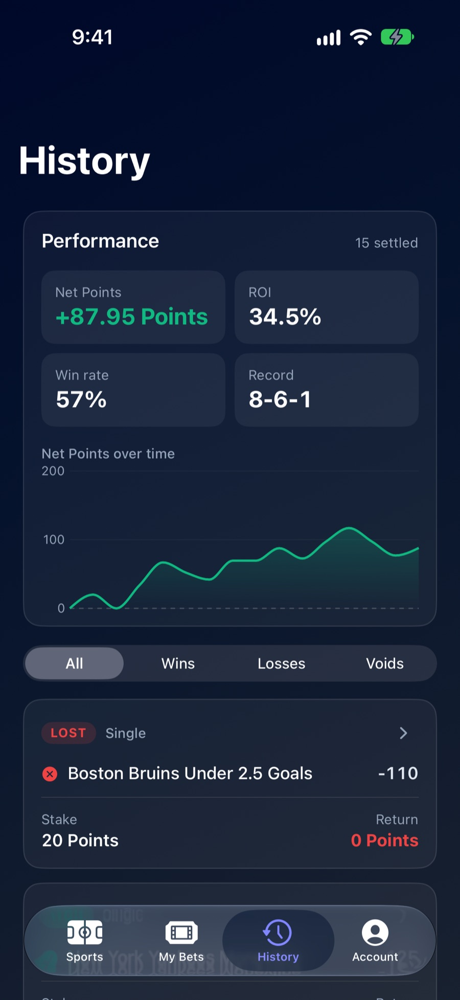

Project · Co-founder
ClosingLine
Sports picks, backed by a model.
Co-founded with Dylan Plut and Brenden Auger. I built the iPhone app, the website and the server they both run on.
- Role
- Co-founder. I build the iPhone app, the website and the server.
- Team
- Dylan Plut, CEO · Brenden Auger, CMO
- Platforms
- iPhone and web
- Sports
- NHL and MLB
- Stack
- SwiftUI
- Next.js
- React
- Tailwind
- Python
- Flask
- Postgres
- Redis
- Docker
- Google Cloud
- Stripe
- Gemini
~22,000lines of Swift in the iPhone app
+1,587Points for the model's top pick, 2024 NHL season
Why it exists
Most sports apps either push picks at you or bury you in stats. We wanted one place where you can see what a model thinks of a pick, the stats that matter for it, and how your own picks hold up over time, without putting money on the line.
Dylan had been building prediction models for hockey, and I wanted to turn them into something people could use every night. ClosingLine started as a website in early 2025, and the iPhone app followed that summer.
What's in it
-

Tonight's games, with the model's win chance next to each team. -

Every market for a game: moneyline, totals, goalscorers, shots and points. -

Baseball uses the same screens, with run lines, totals and player props. -

Build a parlay and see the combined odds and payout before you place it. -

Open bets update live while the games are on. -

Your record over time: net Points, win rate and return.
How it's built
The iPhone app and the website are separate apps that share one server. The server is written in Python with Flask and runs on Google Cloud. It stores accounts and bets in Postgres, keeps live game data in a short-lived cache, and handles sign-in and payments.
Every day, Dylan's models score the upcoming games and send their predictions to the server, so both apps always show the same numbers.
Hard parts
-
Adding a second sport.
Everything was written for hockey. Adding baseball meant teaching the server, the website and the app that a game can belong to different sports, each with its own markets, without breaking anything for hockey fans.
-
Settling bets live.
Every pick resolves from live game data, including the messy cases: postponed games, scratched players and props that disappear once a game starts.
-
Two apps, one set of numbers.
Odds, payouts and records are all worked out on the server, so the website and the iPhone app never disagree.
-
Game nights.
Everyone opens the app at the same time, right when scores and odds are changing fastest. The server has to keep up without anyone waiting.